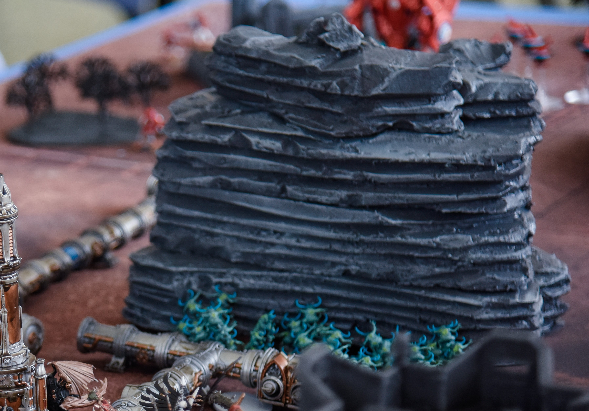

Thoughts on terrain.
Over the last few months I have built 25 tables of terrain. I work on a principle of ten items of terrain per table, of which at least six should substantially block line of sight, and at least one of those should be large enough to hide a land raider behind. So somewhere in the region of 250+ pieces of terrain. This has been an almost entirely solo task, and honestly I never want to hear the sound of a knife on insulation foam ever again, but it has given me a lot of time to think about how terrain functions in 40k, and what good terrain should and should not be. I wanted to share some of my takeaways from the experience, in the hope we can all improve the general quality of our games.
- Base your ruins.
- Games Workshop terrain doesn’t do the job it needs to do.
- Lots of it.
This is by far my biggest bugbear. One I complain about so much that my gaming group out here in China have practically taken to sending me pictures of un-based ruins to trigger me. The wording on ruins from the 40k rulebook state:
Unless they can FLY, VEHICLES, MONSTERS, CAVALRY and BIKERS can only be set up or end their move on the ground floor of ruins. INFANTRY are assumed to be able to scale walls and traverse through windows, doors and portals readily. These models can therefore move through the floors and walls of a ruin without further impediment. INFANTRY units that are entirely on or within a ruin receive the benefit of cover. Other units that are entirely on or within a ruin only receive the benefit of cover if at least 50% of every model is obscured from the point of view of the shooting model.
We’re all familiar with these rules. Ruins are, without a doubt, the most
common terrain in 40k, they’re one of the only ones GW makes, and most of us
are doing them wrong. Let’s take another look at that wording. We have references
to the “ground floor” and units being “on or within” a ruin.
Now ask yourself, what counts as “on or within” or the “ground floor” of this?

Without a base, this terrain is essentially meaningless. Outside of actually standing on the top of the wall this miniature will never be “on” or “in” this ruin, and let’s not even get in to the fact this has no floor to have a “ground floor.” This model is receiving 0 cover.
When I raise this I am often told we have to draw a logical space
where the base should be. I am often told to draw a mental rectangle.
Let’s look at the other incredibly common type of ruin for this one.
In this I assume players are expecting to draw an abstract rectangle like the one I’ve drawn in red? Or is the more reserved line in blue? Honestly both of them are terrible for managing a competitive game, ambiguity like this is the bane of a judge’s life.
Don’t get me started on this.
Why does this column have to come out father than the walls? Where exactly is the ground floor of this beautiful abomination?
All of these problems are fixed instantly with a bit of 3mm foam board or mdf glued to the base.
Problem solved. Those useless Ryza ruins now create a specific area of the battlefield that provides cover. It even allows us to instantly answer questions of if you’re in or out right down to the “toe-in” distinction where the edge of your base is on the ruin (it’s easy, is the model slightly tilted? Then it’s in.)
Confession time: I love GW’s ruins. Outside of the ugly mess
that are the Ryza ruins I have been in love with their urban
aesthetic since my cardboard 2nd edition corners. They’ve had
a consistent and awesome style for almost three decades.
However, no matter how beautiful the scenery GW produces are, they suffer from one really crucial flaw: they don’t significantly block line of sight. Essentially every one of those beautiful ruins has so many windows and gaps that you can see a model from any angle. In a game that uses true line of sight to identify legal targets tactical challenges and variety is generated by blocking line of sight on certain areas of the map. We’ve all played that game on planet bowling ball, and unless you’re playing a tau vs guard matchup none of us WANT to play that game. (That game is basically decided by the first turn dice roll, it’s just grim.)
Let’s look at some examples of GW’s current options for non-fortification terrain.
|
|
|
|
|
|
|
|
|
|
After reviewing out options the conclusion we have to come to is that GW have amazing designers, who don’t play enough 40k. In a game reliant
on LOS blocking for tactical play, we get nothing that significantly blocks LOS. The solution tournament organizers have to turn to is other
sources of terrain. For the most part I make my own – using foamboard to create buildings with no ground floor windows, and, of course, the
most useful terrain in 40k – the big a$$ rock.

So there we have it. Point two is that GW terrain is never going to be enough for our needs. We need to significantly increase the amount of LOS blocking terrain, whether you make it yourself or purchase the great stuff from FLG.
We’ve all seen tournaments let down by their scenery. It’s practically become a meme in its own right. I fully endorse every TO’s right to set up and design their own terrain variations. But can we please all agree to put a decent amount of terrain on the board?
Over here in China we agreed to a basic rule of 10 pieces of significant terrain on each table (that excludes barricades, pipes, and other scatter.) That’s hills, ruins, woods, etc. Of those 10, 6 would be significant LOS blockers. 1 of these would be large enough to hide a tank behind. (Leman Russ or battlewagon was our benchmark.) The other 4 would provide cover.

Also, and this is a big complaint of mine, if you have nice big terrain pieces don’t
stick them off in the corner. I like to ensure I have one piece in the central area,
with enough variation of the other pieces to make the dice roll to pick deployment zone
matter. Avoid that barren central kill zone.
While we’re talking about deployment zone choice definitely do not have entirely even
terrain placement, otherwise why even bother to pick deployment zone. I’ve seen several
suggestions for standardized terrain placement and they all have the same symmetry,
leading to 0 tactical value to picking deployment area.
- Base your ruins (and your woods, obviously.)
- Build your own LOS blockers, GW doesn’t make them.
- Use enough terrain (10 pieces, 6 LOS blockers – 1+ large, 4 cover providing area terrain.)
Adhuc quaerendum est ne, vis ut harum tantas noluisse, id suas iisque mei. Nec te inani ponderum vulputate, facilisi expetenda has et. Iudico dictas scriptorem an vim, ei alia mentitum est, ne has voluptua praesent.
Sumo euismod dissentiunt ne sit, ad eos iudico qualisque adversarium, tota falli et mei. Esse euismod urbanitas ut sed, et duo scaevola pericula splendide. Primis veritus contentiones nec ad, nec et tantas semper delicatissimi.
Duis sed odio sit amet nibh vulputate cursus a sit amet mauris. Morbi accumsan ipsum velit. Duis sed odio sit amet nibh vulputate cursus a sit amet mauris
Investigationes demonstraverunt lectores legere me lius quod ii legunt saepius. Claritas est etiam processus dynamicus, qui sequitur mutationem consuetudium lectorum.
Typi non habent claritatem insitam; est usus legentis in iis qui facit eorum claritatem.